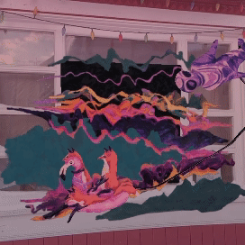

pink/KLYNK

strange things done

sloppy machine

monde gris

entropy

murmuration
|  pink/KLYNK |
strange things done |
sloppy machine |
monde gris |
entropy |
murmuration |
jklynk is jonny klynkramer, an experimental filmmaker, digital media artist & music producer living and working on the traditional and contemporary territory of the tr’ondëk hwëchin in dawson city, yukon, canada.
their work examines the dichotomies of nature/technology, digital/analog and generation/de-generation with an eye towards liminal spaces.
major achievements:
find jklynk at these places: